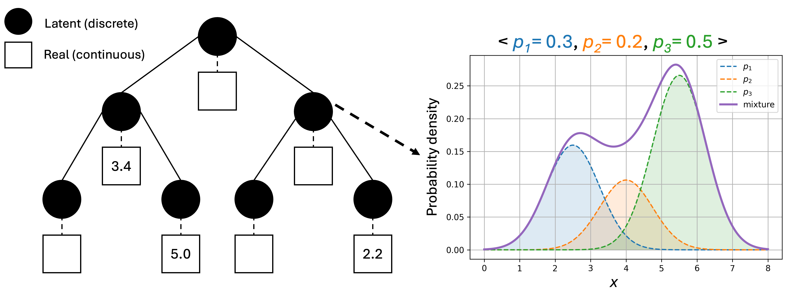
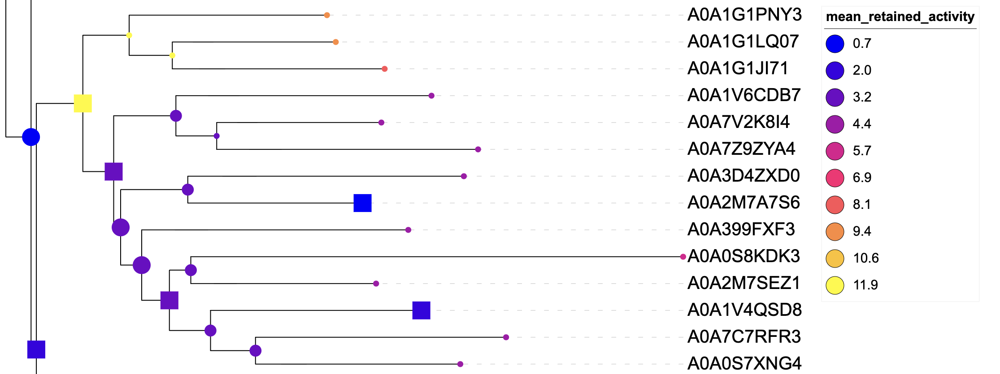
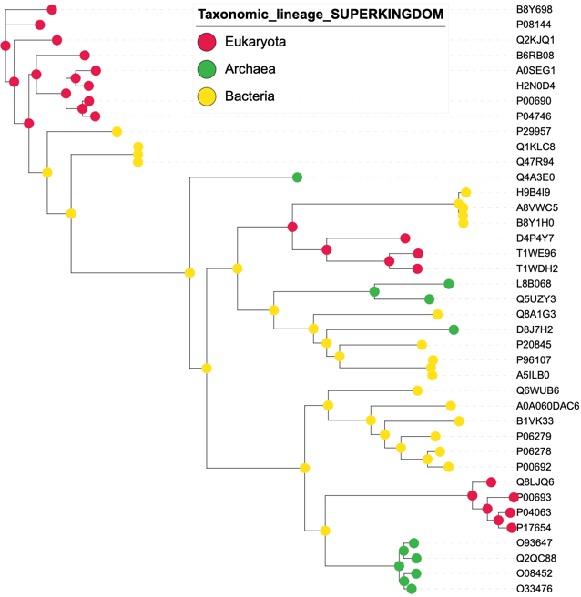

TreeGazer
Table of Contents
- Model background
- Command line reference
- Examples
- Latent mode - learning
- Latent mode - Marginal inference
- Latent mode - joint inference
- Direct mode - joint inference
- Direct mode - marginal inference
Command line reference
Usage: asr.TreeGazer
[-nwk <tree-file> -in {<label>@}<input-file> -out <output-file>]
{-params <JSON-file>}
{-latent <#states>}
{-internal}
{-learn}
{-untied}
{-seed <seed>}
{-joint (default) | -marg {<branchpoint-id>} }
{-format <TSV(default), TREE, STDOUT, ITOL>}
{-lambda <value (default 5.0)>}
{-cmin <value (default: min of -in values)>}
{-cmax <value (default max of -in values)>}
{-help|-h}
{-verbose|-v}
where:
tree-file is a phylogenetic tree on Newick format
input-file is a TSV file with sequence or ancestor names in the first column, with corresponding values in the other columns (empty or None or null implies not assigned)
label flags that a header is used in the input-file and identifies the column with values to be modelled; if no label is given, values from the second column will be modelled
output-file is the prefix of the file, the type of file is changed by -format:
- TSV by default containing both inferred and known nodes.
- TREE is a labelled tree on Newick format
- ITOL is a dataset to decorate trees in iTOL.embl.de
lambda is the multiplier for the upper confidence bound of predicted values (used only when latent mode with real values is applied)
latent indicates the number of latent states to use.
- The number of latent states to learn should not exceed 25 as latent states are labelled A-Z.
internal indicates that internal nodes are also extended with user-specified or learned distributions (default leaves-only).
learn excludes inference and instead prompts EM learning of parameters, using input data as training data.
untied implies that the variance learned is NOT the same across the latent states (only applicable when EM-learning GDTs; default is tied variance).
cmax and cmin specify the maximum and minimum values for the colour scale of iTOL output (only applicable when latent mode with real values is applied; default is to use the max and min of the input values).
help prints out commandline arguments (this screen).
verbose completes the requested steps while printing out messages about the process.
Evolutionary models of substitution are currently limited to uniform, which is an adaptation of Jukes-Cantor for arbitrary number of states.
If specified values are real, a conditional Gaussian mixture distribution conditioned on latent state is learned.
If specified values are discrete, a multinomial distribution conditioned on latent state is learned.
Inference is either joint (default) or marginal (marginal allows a branch-point to be nominated; if one is not given all uninstantiated nodes are inferred)
Model background
TreeGazer is a tool to annotate ancestors (internal) and extant (leaf) nodes in a phylogenetic tree by reference to a subset of nodes with known properties. These properties are represented by either discrete or continuous variables.
In the case of continuous variables, TreeGazer uses latent discrete variables to mix Gaussian distributions of the observable continuous variables (Figure 1). The parameters for these mixtures are learnt via expectation maximisation (EM) and are shared between all nodes in the tree; the states at the nodes are governed by an evolutionary model. The use of latent variables is optional for discrete observables. TreeGazer can also perform direct inference whereby observed variables are mapped directly onto the tree structure without any internal latent variables.

Figure 1: A visualisation of the TreeGazer model structure when performing latent inference. Discrete latent nodes (circles) mimic the structure of the phylogenetic tree, while continuous, real nodes (squares) are fixed with known values for a given property (for example, a kinetic parameter). Users can specify any number of latent states, with each latent state mapping to a Gaussian distribution for which parameters are learned from the data.The table below summarises the main analyses TreeGazer can perform and the possible data types that can be used. the following sections will detail how to perform each type of analysis.
| Mode | Outcome | Input Data Type |
|---|---|---|
| Direct | Joint reconstruction | Discrete only |
| Direct | Marginal reconstruction | Discrete only |
| Latent | Learning | Discrete and real |
| Latent | Marginal reconstruction (learning required first) | Discrete and real |
| Latent | Joint reconstruction (learning required first) | Discrete and real |
Examples
Latent mode - learning
Before performing any type of latent inference, the distribution shared by all nodes must be first be learnt. Below is
an example of how the input TSV file should be formatted. Extant nodes are labelled by their accession IDs and
internal, ancestor nodes are labelled as per GRASP (N0, N1, etc in a depth first manner). The node names must
be in the first column. Note also that when no value is available you just leave that cell blank or use a value
like null, None:
Entry mean_retained_activity std_retained_activity Isobutanol_%
A0A2M7A7S6 0.3990116080000001 0.19623674311255804 8
N1 0.17249387866666666 0.038831346745923825 8
N227 0.4221575046666666 0.001622404 8
N28 0.8627858626666667 0.031306071743960474 8
N29 0.5615638736666667 0.008130065 8
N459 0.39025134166666664 0.013820733111537073 8
N608 0.10784281966666666 0.005627829 8
N615 0.6278029940000001 0.025805765715013116 8
N78 12.469763536666667 1.1619048626436186 8
N79 2.6974158083333335 0.051390714599450736 8
N82 2.074187615 0.2004342392387551 8
N95 0.3724682653333333 0.022329334151059477 8
A0A0K9HJH1 0.5610371706666667 0.029527957919090055 8
D3PT81 0.319143403 0.043889298 8
A0A1V4QSD8 1.3732522796666666 0.039652550084277975 8
Below is an example command to perform learning:
java -jar treegazer.jar -nwk kari.nwk -params kari_demo.params -latent 3
-in demo.tsv -seed 42 -internal -learn -verbose
The model uses three latent states (-latent 3) for which it invents three discrete values:
mean_retained_activity_1, mean_retained_activity_2 and mean_retained_activity_3. Here we use a tree kari.nwk
which should contain the same labels as the TSV file. Because we are interested in learning the shared
distribution for both internal and external notes, we use the -internal flag. If -internalisn't specified
but there are internal node annotations in the TSV file, these will be ignored.
By default, TreeGazer will assume that the second column of the TSV input contains the values to learn. However, you can specify a specific column using the column name before the input file like so:
java -jar treegazer.jar -nwk kari.nwk -params kari_demo.params -latent 3
-in mean_retained_activity@demo.tsv -seed 42 -internal -learn -verbose
If in -verbose mode, TreeGazer will also print the parameters of the evolutionary model that describe the latent
variables. "R" specifes the instantaneous rate matrix for the 3 state model and "F" specifies the stationary
frequencies of each latent state. TreeGazer assumes a uniform model, where all latent states are equally likely and
the probabilities of transitioning between these states are also equally likely.
"R" : [-0.66, 0.33, 0.33]
[ 0.33, -0.66, 0.33]
[ 0.33, 0.33, -0.66]
"F" : [ 0.33, 0.33, 0.33]
After the EM algorithm converges the parameters are saved into the file indicated by -params.
{"Condition":[["mean_retained_activity_1"],["mean_retained_activity_2"],["mean_retained_activity_3"]],
"Pr":[[12.469763536666667,0.11150665525484037],[2.049876146158595,0.11150665525484037],[0.4366513910438917,0.11150665525484037]],
"Variable":{"Domain":{"Predef":"Real"},"Name":"0_Real"},"Nodetype":"GDT","TieVariance":2,"Index":[0,1,2]}
The contents of "Pr" are the mean and variance respectively of each of the latent states. Note that the variance values
are the same across all latent states, pooled from all the data. Tied variance used by default and is recommended in
most cases, especially if the data is sparse. This can be disabled by using the -untied flag.
Latent mode - Marginal inference
Now that we have kari_demo.params we can perform actual inference.
java -jar treegazer.jar -out kari_demo -nwk kari.nwk -params kari_demo.params -latent 3
-in demo.tsv -seed 42 -internal -verbose -marg -out kari_demo_marg
By default, TreeGazer will output the results in a TSV file with both known and inferred values.
Entry mean_retained_activity (Mean) mean_retained_activity (SD) mean_retained_activity (UCB)
N0 0.4159883877711853 0.3399206669380877 2.1155917224616236
N1 0.17249387866666666
N2 0.6965149831920605 1.6692858637489851 9.042944301936986
N3 1.252269881963146 2.83445639799529 15.424551871939595
N4 1.7435295250035734 3.579176033836374 19.639409694185446
N5 2.403442216905911 4.237785076700372 23.592367600407773
A0A0A7GET6 3.6236493368774387 4.9655733305662855 28.451515989708867
N6 3.605903787080107 4.956870443119277 28.39025600267649
N7 3.868271518731236 5.0899309538387705 29.31792628792509
For nodes that had known values, the mean, standard deviation and upper confidence bound (UCB) are not
calculated and so will be left blank. For uninstantiated nodes, the mean, standard
deviation and UCB are calculated by sampling from the Gaussian mixture distribution at that node. The UCB is
calculated as the mean plus the lambda multiplier of the standard deviation. By default, lambda is
set to 5.0, but this can be changed using the -lambda flag.
To visualise the results in iTOL add -format ITOL and the output file will be in the correct
format to be dropped into the iTOL website. Squares represent the training data and circles represent the
inferred values, with the size of circles representing the confidence of the prediction.
The colour scale is determined by the maximum and minimum values in the input data, but
this can be changed by using the -cmax and -cmin flags. Manually setting the colour
scale can be useful when you want your visualisations to be comparable across different datasets.

Latent mode - joint inference
The joint labelling of latent states that explains the data can also be inferred.
This is done by using the -joint flag instead of -marg.
java -jar treegazer.jar -out kari_demo -nwk kari.nwk -params kari_demo.params -latent 3
-in demo.tsv -seed 42 -internal -verbose -joint -out kari_demo_joint
The file kari_demo_joint.tsv will then contain the most likely latent state for each
node in the tree, which is the same as the most likely Gaussian distribution for that node.
Entry mean_retained_activity
N0 mean_retained_activity_3
N2 mean_retained_activity_3
N3 mean_retained_activity_3
N4 mean_retained_activity_3
N5 mean_retained_activity_3
A0A0A7GET6 mean_retained_activity_3
N6 mean_retained_activity_3
N7 mean_retained_activity_3
A0A2A5QQ65 mean_retained_activity_3
Direct mode - joint inference
Unlike with latent mode, when performing direct inference only a single step is required to infer the most likely labelling of the tree. This is because there are no latent states and so the observed values are directly mapped onto the tree structure. We have a tab-separated value file (TSV file) with discrete annotations specifying the taxonomic superkingdom of a subset of nodes in the tree.
Entry PHYLUM SUPERKINGDOM
A5ILB0 Thermotogae Bacteria
P08144 Arthropoda Eukaryota
P29957 Proteobacteria Bacteria
H2N0D4 Chordata Eukaryota
T1WDH2 Ciliophora Eukaryota
T1WE96 Ciliophora Eukaryota
H9B4I9 Firmicutes Bacteria
A0A060DAC6 None None
Q47R94 Actinobacteria Bacteria
We can infer the joint labeling (-joint) of external and internal nodes most likely to explain the labels
in the matching annotation file.
java -jar treegazer.jar -out kari_demo -nwk kari.nwk -in superkingdom@demo.tsv -seed 42 -internal -verbose -out kari_taxa_joint -joint
The result is here saved as an iTOL dataset file (-format ITOL), which we drop in the iTOL webtool once the
tree file has been uploaded.

Direct mode - marginal inference
Marginal inference can also be performed in direct mode, but only for discrete data.
This is done by using the -marg flag instead of -joint.
java -jar treegazer.jar -out kari_demo -nwk kari.nwk -in superkingdom@demo.tsv -seed 42 -internal -verbose -out kari_taxa_marg -marg
The output file will then contain the probability of each node being in each state. Note that you cannot make an iTOL visualisation of marginal inference results in direct mode, as the from a direct marginal inference is the multinomial distribution of the observed states.
Entry Eukaryota Bacteria
N0 0.5 0.5
N2 0.9693484697521487 0.030651530247851267
N3 0.9180669129002216 0.0819330870997784
N4 0.8715425890702533 0.12845741092974677
N5 0.7956810969656312 0.20431890303436887
A0A0A7GET6 0.6574044328303008 0.3425955671696993
N6 0.6593567657556293 0.3406432342443707
N7 0.631639943967058 0.368360056032942
A0A2A5QQ65 0.5573169561287165 0.4426830438712836